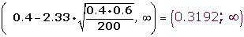
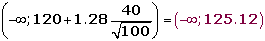

Ejercicios y problemas de contraste de hipótesis
1Se sabe que la desviación típica de las notas de cierto examen de Matemáticas es 2,4. Para una muestra de 36 estudiantes se obtuvo una nota media de 5,6. ¿Sirven estos datos para confirmar la hipótesis de que la nota media del examen fue de 6, con un nivel de confianza del 95%?
2Un sociólogo ha pronosticado, que en una determinada ciudad, el nivel de abstención en las próximas elecciones será del 40% como mínimo. Se elige al azar una muestra aleatoria de 200 individuos, con derecho a voto, 75 de los cuales estarían dispuestos a votar. Determinar con un nivel de significación del 1%, si se puede admitir el pronóstico.
3Un informe indica que el precio medio del billete de avión entre Canarias y Madrid es, como máximo, de 120 € con una desviación típica de 40 €. Se toma una muestra de 100 viajeros y se obtiene que la media de los precios de sus billetes es de 128 €.
¿Se puede aceptar, con un nivel de significación igual a 0,1, la afirmación de partida?
4Una marca de nueces afirma que, como máximo, el 6% de las nueces están vacías. Se eligieron 300 nueces al azar y se detectaron 21 vacías.
1Con un nivel de significación del 1%, ¿se puede aceptar la afirmación de la marca?
2Si se mantiene el porcentaje muestral de nueces que están vacías y 1-α = 0.95, ¿qué tamaño muestral se necesitaría para estimar la proporción de nueces con un error menor del 1% por ciento?
5La duración de la bombillas de 100 W que fabrica una empresa sigue una distribución normal con una desviación típica de 120 horas de duración. Su vida media está garantizada durante un mínimo de 800 horas. Se escoge al azar una muestra de 50 bombillas de un lote y, después de comprobarlas, se obtiene una vida media de 750 horas. Con un nivel de significación de 0,01, ¿habría que rechazar el lote por no cumplir la garantía?
6Un fabricante de lámparas eléctricas está ensayando un nuevo método de producción que se considerará aceptable si las lámparas obtenidas por este método dan lugar a una población normal de duración media 2400 horas, con una desviación típica igual a 300. Se toma una muestra de 100 lámparas producidas por este método y esta muestra tiene una duración media de 2320 horas. ¿Se puede aceptarr la hipótesis de validez del nuevo proceso de fabricación con un riesgo igual o menor al 5%?
7El control de calidad una fábrica de pilas y baterías sospecha que hubo defectos en la producción de un modelo de batería para teléfonos móviles, bajando su tiempo de duración. Hasta ahora el tiempo de duración en conversación seguía una distribución normal con media 300 minutos y desviación típica 30 minutos. Sin embargo, en la inspección del último lote producido, antes de enviarlo al mercado, se obtuvo que de una muestra de 60 baterías el tiempo medio de duración en conversación fue de 290 minutos. Suponiendo que ese tiempo sigue siendo Normal con la misma desviación típica:
¿Se puede concluir que las sospechas del control de calidad son ciertas a un nivel de significación del 2%?
8Se cree que el nivel medio de protombina en una población normal es de 20 mg/100 ml de plasma con una desviación típica de 4 miligramos/100 ml. Para comprobarlo, se toma una muestra de 40 individuos en los que la media es de 18.5 mg/100 ml. ¿Se puede aceptar la hipótesis, con un nivel de significación del 5%?
- 1
- 2
- 3
- 4
- 5
- 6
- 7
- 8
Ejercicio 1 resuelto
Se sabe que la desviación típica de las notas de cierto examen de Matemáticas es 2,4. Para una muestra de 36 estudiantes se obtuvo una nota media de 5,6. ¿Sirven estos datos para confirmar la hipótesis de que la nota media del examen fue de 6, con un nivel de confianza del 95%?
1. Enunciamos las hipótesis nula y alternativa:
H0 : μ = 6 La nota media no ha variado.
H1 : μ ≠ 6 La nota media ha variado.
2. Zona de aceptación
Para α = 0.05, le corresponde un valor crítico: zα/2 = 1.96.
Determinamos el intervalo de confianza para la media:
(6-1,96 · 0,4 ; 6+1,96 · 0,4) = (5,22 ; 6,78)
3. Verificación.
Valor obtenido de la media de la muestra: 5,6 .
4. Decisión
Aceptamos la hipótesis nula H0, con un nivel de significación del 5%.
Ejercicio 2 resuelto
Un sociólogo ha pronosticado, que en una determinada ciudad, el nivel de abstención en las próximas elecciones será del 40% como mínimo. Se elige al azar una muestra aleatoria de 200 individuos, con derecho a voto, 75 de los cuales estarían dispuestos a votar. Determinar con un nivel de significación del 1%, si se puede admitir el pronóstico.
1. Enunciamos las hipótesis nula y alternativa:
H0 : μ ≥ 0.40 La abstención será como mínimo del 40%.
H1 : μ < 0.40 La abstención será como máximo del 40%;
2. Zona de aceptación
Para α = 0.01, le corresponde un valor crítico: zα = 2.33.
Determinamos el intervalo de confianza para la media:

3.Verificación.

4.Decisión
Aceptamos la hipótesis nula H0. Podemos afirmar, con un nivel de significación del 1%, que la La abstención será como mínimo del 40%.
Ejercicio 3 resuelto
Un informe indica que el precio medio del billete de avión entre Canarias y Madrid es, como máximo, de 120 € con una desviación típica de 40 €. Se toma una muestra de 100 viajeros y se obtiene que la media de los precios de sus billetes es de 128 €.
¿Se puede aceptar, con un nivel de significación igual a 0,1, la afirmación de partida?
1. Enunciamos las hipótesis nula y alternativa:
H0 : μ ≤ 120
H1 : μ > 120
2.Zona de aceptación
Para α = 0.1, le corresponde un valor crítico: zα = 1.28 .
Determinamos el intervalo de confianza:

3. Verificación.
Valor obtenido de la media de la muestra: 128 € .
4. Decisión
No aceptamos la hipótesis nula H0. Con un nivel de significación del 10%.
Ejercicio 4 resuelto
Una marca de nueces afirma que, como máximo, el 6% de las nueces están vacías. Se eligieron 300 nueces al azar y se detectaron 21 vacías.
Soluciones:1Con un nivel de significación del 1%, ¿se puede aceptar la afirmación de la marca?
1 Enunciamos las hipótesis nula y alternativa:
H0 : p ≤ 0.06
H1 : p >0.06
2Zona de aceptación
α = 0.01 zα = 2.33.
Determinamos el intervalo de confianza:

3Verificación.

4Decisión
Aceptamos la hipótesis nula H0. Con un nivel de significación del 1%.
2Si se mantiene el porcentaje muestral de nueces que están vacías y 1-α = 0.95, ¿qué tamaño muestral se necesitaría para estimar la proporción de nueces con un error menor del 1% por ciento?
1 - α = 0, 9 5z α/2 = 1, 96


Ejercicio 5 resuelto
La duración de la bombillas de 100 W que fabrica una empresa sigue una distribución normal con una desviación típica de 120 horas de duración. Su vida media está garantizada durante un mínimo de 800 horas. Se escoge al azar una muestra de 50 bombillas de un lote y, después de comprobarlas, se obtiene una vida media de 750 horas. Con un nivel de significación de 0,01, ¿habría que rechazar el lote por no cumplir la garantía?
1. Enunciamos las hipótesis nula y alternativa:
H0 : µ ≥ 800
H1 : µ <800
2.Zona de aceptación
α = 0.01; zα = 2.33
Determinamos el intervalo de confianza:

3.Verificación.
x = 750
4.Decisión
Rechazamos la hipótesis nula H0. Con un nivel de significación del 1%.
Ejercicio 6 resuelto
Un fabricante de lámparas eléctricas está ensayando un nuevo método de producción que se considerará aceptable si las lámparas obtenidas por este método dan lugar a una población normal de duración media 2400 horas, con una desviación típica igual a 300. Se toma una muestra de 100 lámparas producidas por este método y esta muestra tendrá una duración media de 2320 horas. ¿Se puede aceptarr la hipótesis de validez del nuevo proceso de fabricación con un riesgo igual o menor al 5%?
1. Enunciamos las hipótesis nula y alternativa:
H0 : μ = 2400
H1 : μ ≠2400
2.Zona de aceptación
α = 0.05 zα = 1.96.
Determinamos el intervalo de confianza para la media:

3.Verificación.
Valor obtenido de la media de la muestra: 2320 .
4.Decisión
Rechazamos la hipótesis nula H0, con un nivel de significación del 5%.
Ejercicio 7 resuelto
El control de calidad una fábrica de pilas y baterías sospecha que hubo defectos en la producción de un modelo de batería para teléfonos móviles, bajando su tiempo de duración. Hasta ahora el tiempo de duración en conversación seguía una distribución normal con media 300 minutos y desviación típica 30 minutos. Sin embargo, en la inspección del último lote producido, antes de enviarlo al mercado, se obtuvo que de una muestra de 60 baterías el tiempo medio de duración en conversación fue de 290 minutos. Suponiendo que ese tiempo sigue siendo Normal con la misma desviación típica:
¿Se puede concluir que las sospechas del control de calidad son ciertas a un nivel de significación del 2%?
1. Enunciamos las hipótesis nula y alternativa:
H0 : µ ≥ 300
H1 : µ < 300
2.Zona de aceptación
α = 0.02; 1- α = 0. 98; P(1.96)= 0. 98; zα = 1.96 .
Determinamos el intervalo de confianza:

3.Verificación.
µ = 290
4.Decisión
Rechazamos la hipótesis nula H0. Con un nivel de significación del 2%.
Ejercicio 8 resuelto
Se cree que el nivel medio de protombina en una población normal es de 20 mg/100 ml de plasma con una desviación típica de 4 miligramos/100 ml. Para comprobarlo, se toma una muestra de 40 individuos en los que la media es de 18.5 mg/100 ml. ¿Se puede aceptar la hipótesis, con un nivel de significación del 5%?
1. Enunciamos las hipótesis nula y alternativa:
H0 : μ =20 mg/100 ml
H1 : μ ≠ 20 mg/100 ml
2.Zona de aceptación
Para α = 0.05, le corresponde un valor crítico: zα/2 = 1.96.
Determinamos el intervalo de confianza para la media:

3.Verificación.
Valor obtenido de la media de la muestra: 18.5.
4.Decisión
Rechazamos la hipótesis nula H0, con un nivel de significación del 5%.
 Ejercicios
Ejercicios